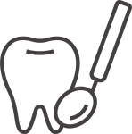
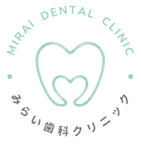

一般治療

虫歯や歯周病など、日常的なお口のトラブルを幅広く診療します。
一般治療について
歯医者さんに対して、
「少し緊張する」「なんとなく苦手」
そんな気持ちを持つ方も少なくありません。
だからこそ私たちは、
安心して相談できること、
落ち着いて過ごせることを大切にしています。
清潔な環境づくりはもちろん、丁寧なご説明や、
やさしく落ち着ける空間づくりにも配慮しています。
ゴールデンウィーク期間中は、暦通りの診療となります。
なお、5月3日（日）〜5月6日（水）は休診とさせていただきます。
連休前後はご予約が混み合うことが予想されますので、お早めのご予約をおすすめいたします。
お口の健康を保つためには、定期的な検診とクリーニングが大切です。
当院では3〜6ヶ月ごとの定期検診をおすすめしております。
むし歯や歯周病の早期発見・予防のためにも、ぜひお気軽にご相談ください。
より安心して診療を受けていただけるよう、院内設備の一部をリニューアルいたしました。
清潔で落ち着いた空間づくりを心がけ、リラックスしてお過ごしいただける環境を整えております。
今後も快適な診療環境づくりに努めてまいります。

| 診療時間 | 月 | 火 | 水 | 木 | 金 | 土 | 日・祝 |
|---|---|---|---|---|---|---|---|
| 9:30ｰ13:00 | ● | ● | ● | ー | ● | ● | ー |
| 14:30ｰ18:30 | ● | ● | ● | ー | ● | ▲ | ー |
※土曜日の午後は18：00まで